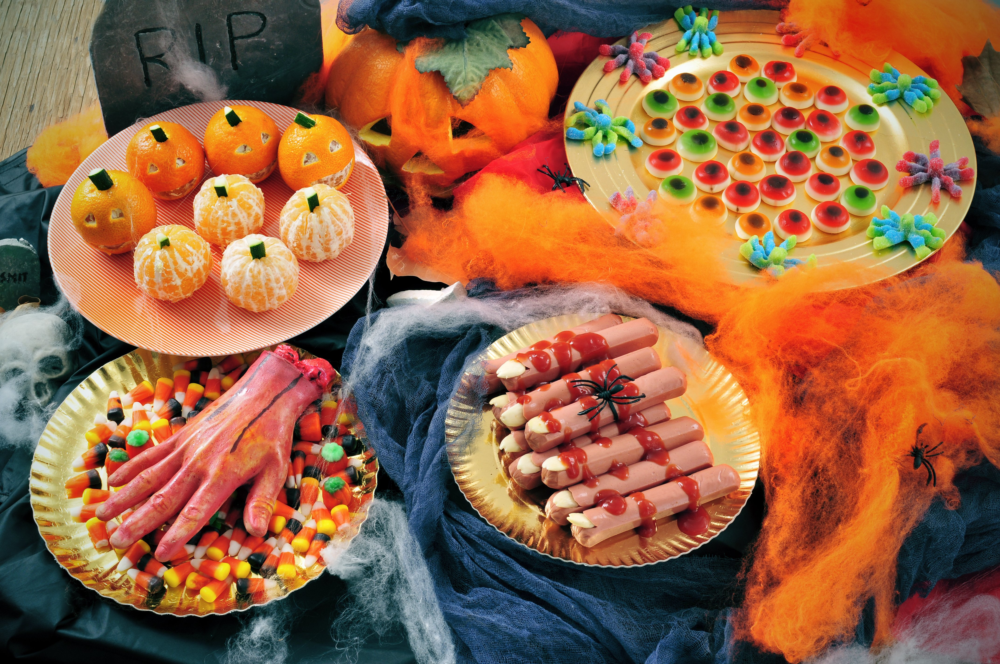

Durante Halloween, los dulces son esenciales: caramelos, chocolates y gomitas se reparten a los niños durante el "trick-or-treating".
Se preparan galletas, cupcakes y pasteles con formas de calabaza, fantasmas y brujas. Algunos platos son decorativos, con colores llamativos como naranja y negro.
La gastronomía de Halloween se ha mezclado con tradiciones locales en cada país. Por ejemplo, en México se comparte con el Día de Muertos, y en Estados Unidos se ha convertido en una fiesta familiar con recetas especiales.

Contacto: jatq2018@gmail.com
Tel: +591 73061654
© 2025 Halloween vs Todos Santos
© HECHO POR JASEFT ANGEL TAPIA QUISBERT